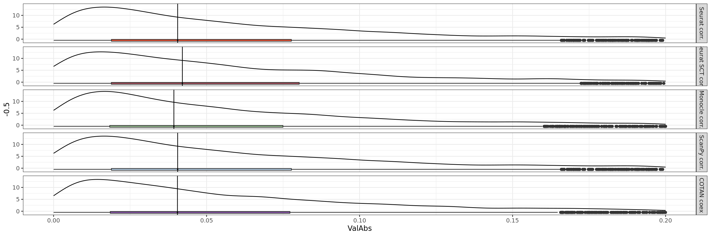
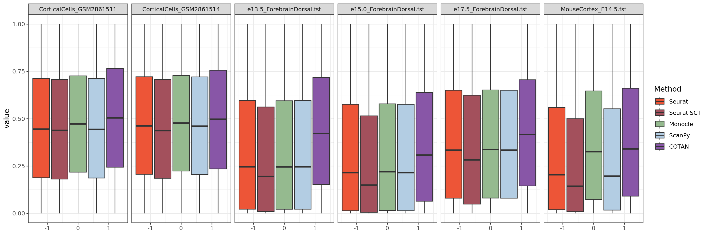
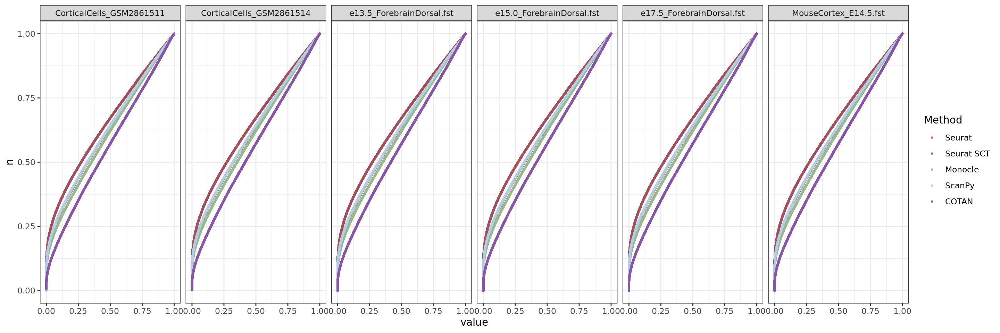
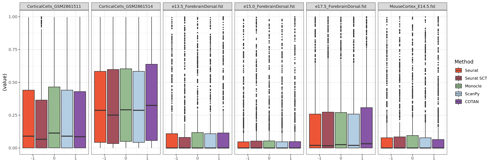
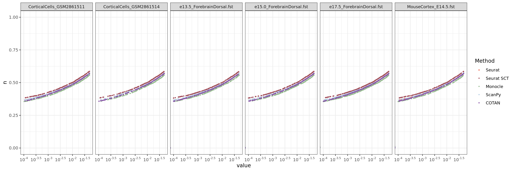
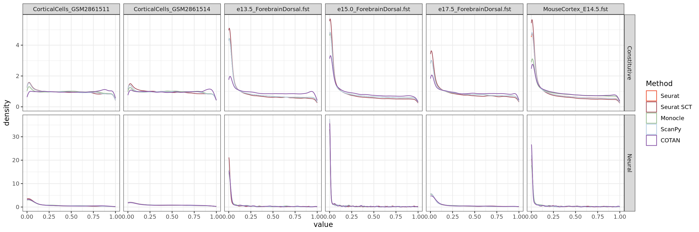
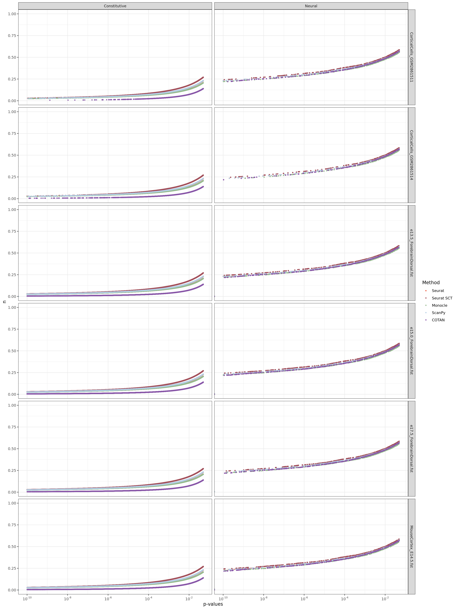

library(tidyr)
library(stringr)
library(ggplot2)
library(gghalves)
library(ggstatsplot)
library("gridExtra")
library(cowplot)
library(Matrix)
library(ggstance)
library(scales)
library(COTAN)
library(ComplexHeatmap)
library(circlize)
library(dplyr)
library(fst)
options(parallelly.fork.enable = TRUE)
#Define colors
colors.methods <- c("#ed5537","#a3505c","#95ba8f","#B3CDE3","#8856A7" )General Coex Evaluation
#layer.genes <- read.csv("CoexData/some_layer_maerkers.csv", header = T,row.names = 1)
genesList <- list(
"NPGs"=
c("Nes", "Vim", "Sox2", "Sox1", "Notch1", "Hes1", "Hes5", "Pax6"),
"PNGs"=
c("Map2", "Tubb3", "Neurod1", "Nefm", "Nefl", "Dcx", "Tbr1"),
"hk"=
c("Calm1", "Cox6b1", "Ppia", "Rpl18", "Cox7c", "Erh", "H3f3a",
"Taf1", "Taf2", "Gapdh", "Actb", "Golph3", "Zfr", "Sub1",
"Tars", "Amacr"),
"layers" = c("Reln","Lhx5","Cux1","Satb2","Tle1","Mef2c","Rorb","Sox5","Bcl11b","Fezf2","Foxp2","Ntf3","Rasgrf2","Pvrl3", "Cux2","Slc17a6", "Sema3c","Thsd7a", "Sulf2", "Kcnk2","Grik3", "Etv1", "Tle4", "Tmem200a", "Glra2", "Etv1","Htr1f", "Sulf1","Rxfp1", "Syt6") #unique(unlist(str_split(layer.genes$supertype.markers.combo,pattern = ",")))
# From https://www.science.org/doi/10.1126/science.aam8999
)COEX and Correlations
Import COTAN coex and correlations data from file
table.tot.hk <- NA
table.tot.neural <- NA
for (file in list.files("CoexData/",pattern = "Corr|Coex")) {
#for (file in list.files("CoexData/",pattern = "Corr_e13.5|CorrSCT_e13.5|Coex_e13.5")) {
#print(file)
#corr <- readRDS(paste0("CoexData/",file))
corr <- read_fst(paste0("CoexData/",file),to = 2)
colnames.corr <- colnames(corr)
genesListPartial <- genesList
for (na in names(genesListPartial)) {
if(!all(genesListPartial[[na]] %in% colnames.corr)){
print(na)
genesListPartial[[na]] <- genesListPartial[[na]][-which(!genesList[[na]] %in% colnames.corr)]
}
}
corr <- read_fst(paste0("CoexData/",file),
columns = unlist(genesListPartial))
corr <- as.data.frame(as.matrix(corr))
rownames(corr) <- colnames.corr
if(str_detect(file,pattern = "CotanCoex")){
code <- "COTAN coex"
}else if(str_detect(file,pattern = "CorrSCT")){
code <- "Seurat SCT corr."
}else if(str_detect(file,pattern = "MonocleCorr")){
code <- "Monocle corr."
#print("ok")
}else if(str_detect(file,pattern = "ScanPyCorr")){
code <- "ScanPy corr."
#print("ok")
}else if(str_detect(file,pattern = "Corr")){
code <- "Seurat corr."
}
table.hk <- as.data.frame(corr[,genesListPartial$hk])
table.hk$Gene1 <- rownames(table.hk)
table.hk <- pivot_longer(as.data.frame(table.hk),cols = c(1:(ncol(table.hk)-1)),names_to = "Gene2")
table.hk$Method <- code
table.hk$Dataset <- str_flatten(str_split(file,pattern = "_",simplify = T)[,c(2,3)],collapse = "_")
table.tot.hk <- rbind(table.tot.hk,table.hk)
table.tot.hk <- table.tot.hk[! table.tot.hk$Gene1 == table.tot.hk$Gene2,]
#Not hk
table.neural <- as.data.frame(corr[rownames(corr) %in% c(genesListPartial$NPGs,genesListPartial$PNGs,genesListPartial$layers),
colnames(corr) %in% c(genesListPartial$NPGs,genesListPartial$PNGs,genesList$layers)])
table.neural$Gene1 <- rownames(table.neural)
table.neural <- pivot_longer(as.data.frame(table.neural),cols = c(1:(ncol(table.neural)-1)),names_to = "Gene2")
table.neural$Method <- code
table.neural$Dataset <- str_flatten(str_split(file,pattern = "_",simplify = T)[,c(2,3)],collapse = "_")
table.tot.neural <- rbind(table.tot.neural,table.neural)
table.tot.neural <- table.tot.neural[! table.tot.neural$Gene1 == table.tot.neural$Gene2,]
}[1] "layers"
[1] "layers"
[1] "layers"
[1] "layers"
[1] "layers"
[1] "layers"
[1] "layers"
[1] "layers"
[1] "layers"
[1] "layers"
[1] "layers"
[1] "layers"
[1] "layers"
[1] "layers"
[1] "layers"
[1] "layers"
[1] "layers"
[1] "layers"
[1] "layers"
[1] "layers"
[1] "layers"
[1] "layers"
[1] "layers"
[1] "layers"
[1] "layers"
[1] "hk"
[1] "layers"
[1] "layers"
[1] "layers"
[1] "layers"
[1] "layers"table.tot.hk$Method <- factor(table.tot.hk$Method, levels = c("Seurat corr.", "Seurat SCT corr.", "Monocle corr.", "ScanPy corr.", "COTAN coex"))
table.tot.neural$Method <- factor(table.tot.neural$Method, levels = c("Seurat corr.", "Seurat SCT corr.", "Monocle corr.", "ScanPy corr.", "COTAN coex"))table.tot.hk <- table.tot.hk[2:nrow(table.tot.hk),]
table.tot.hk$GeneType <- "Constitutive"
table.tot.neural <- table.tot.neural[2:nrow(table.tot.neural),]
table.tot.neural$GeneType <- "Neural"
## For ECDL
tmp.tot <- NA
for (method in unique(table.tot.hk$Method)) {
tmp <- as.data.frame(table.tot.hk[table.tot.hk$Method == method,])
tmp$n <- NA
tmp[order(abs(tmp$value)),]$n <- c(1:dim(tmp)[1])/(dim(tmp)[1]+1)
tmp$Y_axis <- 1-tmp$n
tmp.tot <- rbind(tmp.tot,tmp)
}
tmp.tot <- tmp.tot[2:nrow(tmp.tot),]
table.tot.hk <- tmp.tot
tmp.tot <- NA
for (method in unique(table.tot.neural$Method)) {
tmp <- as.data.frame(table.tot.neural[table.tot.neural$Method == method,])
tmp$n <- NA
tmp[order(abs(tmp$value)),]$n <- c(1:dim(tmp)[1])/(dim(tmp)[1]+1)
tmp$Y_axis <- 1-tmp$n
tmp.tot <- rbind(tmp.tot,tmp)
}
tmp.tot <- tmp.tot[2:nrow(tmp.tot),]
table.tot.neural <- tmp.tot
############
table.tot <- rbind(table.tot.hk,table.tot.neural)
table.tot <- table.tot[!table.tot$Gene1 == table.tot$Gene2,]
identical(table.tot[table.tot$Method == "COTAN coex",]$Gene1,
table.tot[table.tot$Method == "Seurat corr.",]$Gene1 )[1] FALSEidentical(table.tot[table.tot$Method == "COTAN coex",]$Gene2,
table.tot[table.tot$Method == "Seurat corr.",]$Gene2 )[1] FALSEtable.tot$Method <- factor(table.tot$Method, levels = c("Seurat corr.", "Seurat SCT corr.", "Monocle corr.", "ScanPy corr.", "COTAN coex"))
head(table.tot) Gene1 Gene2 value Method Dataset
2 0610007N19Rik Calm1 0.030413962 COTAN coex CorticalCells_GSM2861511
3 0610007N19Rik Cox6b1 0.008228765 COTAN coex CorticalCells_GSM2861511
4 0610007N19Rik Ppia -0.051969707 COTAN coex CorticalCells_GSM2861511
5 0610007N19Rik Rpl18 0.061781637 COTAN coex CorticalCells_GSM2861511
6 0610007N19Rik Cox7c 0.060690748 COTAN coex CorticalCells_GSM2861511
7 0610007N19Rik Erh 0.070534482 COTAN coex CorticalCells_GSM2861511
GeneType n Y_axis
2 Constitutive 0.8021629 0.19783714
3 Constitutive 0.3250217 0.67497834
4 Constitutive 0.9391370 0.06086305
5 Constitutive 0.9640681 0.03593190
6 Constitutive 0.9620358 0.03796424
7 Constitutive 0.9775790 0.02242102table.tot$ValAbs <- abs(table.tot$value)
table.tot$LogValAbs <- log(table.tot$ValAbs+0.001)
table.tot$SqrValAbs <- table.tot$ValAbs**2
ggplot(table.tot,aes(x=Method,y=ValAbs, fill=Method)) +
geom_half_violin(alpha=0.8) +
#geom_point(position = "jitter", size= 0.1,alpha = 0.3)+
#geom_half_boxplot(width=0.1, alpha=0.8,side = "r") +
theme_bw()+ theme(legend.position="none")+#ylim(0,1)+
facet_grid(GeneType ~ . , space = "free_y", scales = "free")+
scale_fill_manual(values = colors.methods)
ggplot(table.tot[table.tot$GeneType == "Neural",], aes(x = ValAbs, y = -0.5)) +
# horizontal box plot
geom_boxploth(aes(fill = Method)) +
# normal density plot
geom_density(aes(x = ValAbs), inherit.aes = FALSE) +
# # vertical lines at Q1 / Q2 / Q3
# stat_boxploth(geom = "vline", aes(xintercept = ..xlower..)) +
stat_boxploth(geom = "vline", aes(xintercept = ..xmiddle..)) +
# stat_boxploth(geom = "vline", aes(xintercept = ..xupper..)) +
#
facet_grid(Method ~ .) +
# reproduce original chart's color scale (o/w ordered factors will result
# in viridis scale by default, using the current version of ggplot2)
#scale_fill_discrete()+
scale_fill_manual(values = colors.methods)+
theme_bw()+ theme(legend.position="none")+xlim(0,0.2)
ggplot(table.tot[table.tot$GeneType == "Constitutive",], aes(x = ValAbs, y = -0.5)) +
# horizontal box plot
geom_boxploth(aes(fill = Method), outlier.size = 0.5,width=3) +
# normal density plot
geom_density(aes(x = ValAbs), inherit.aes = FALSE) +
# # vertical lines at Q1 / Q2 / Q3
# stat_boxploth(geom = "vline", aes(xintercept = ..xlower..)) +
stat_boxploth(geom = "vline", aes(xintercept = ..xmiddle..)) +
# stat_boxploth(geom = "vline", aes(xintercept = ..xupper..)) +
#
facet_grid(Method ~ .) +
# reproduce original chart's color scale (o/w ordered factors will result
# in viridis scale by default, using the current version of ggplot2)
#scale_fill_discrete()+
scale_fill_manual(values = colors.methods)+
theme_bw()+ theme(legend.position="none")+xlim(0,0.1)
We can clearly observe that the coex is generally more near to zero than the correlations.
ggplot(table.tot,aes(x=ValAbs, color=Method, y = Y_axis)) +
geom_point(alpha=0.8) +
scale_color_manual(values = colors.methods)+
scale_y_continuous(trans= "log",breaks = c(0,0.1,0.25,0.5)
)+
scale_x_continuous(trans= "log",
breaks = c(0.1,0.2,0.3, 0.4,0.5,0.8), limits = c(0.01,0.85))+
theme_bw()+ theme(legend.position="bottom")+
facet_grid(GeneType ~ Dataset)
ggplot(table.tot.hk,aes(x=abs(value), color=Method))+stat_ecdf(geom = "point", size = 0.5 )+scale_color_manual(values = colors.methods)+
scale_y_continuous(trans= "exp")+facet_grid(. ~ Dataset)
ggplot(table.tot,aes(x=Method,y=LogValAbs, fill=Method)) +
#geom_half_boxplot(alpha=0.8) +
#geom_point(position = "jitter", size= 0.1,alpha = 0.3)+
geom_boxplot(alpha=0.8,outlier.size = 0.1,outlier.colour='blue') +
theme_bw()+ theme(legend.position="none")+#ylim(0,0.2)+
facet_grid(GeneType ~ Dataset , space = "free_y", scales = "free")+
scale_fill_manual(values = colors.methods)
p-values
table.tot.hk <- NA
table.tot.neural <- NA
for (file in list.files("CoexData/",pattern = "PValue")) {
pval <- read_fst(paste0("CoexData/",file),to = 2)
colnames.pval <- colnames(pval)
genesListPartial <- genesList
for (na in names(genesListPartial)) {
if(!all(genesListPartial[[na]] %in% colnames.pval)){
print(na)
genesListPartial[[na]] <- genesListPartial[[na]][-which(!genesList[[na]] %in% colnames.pval)]
}
}
pval <- read_fst(paste0("CoexData/",file),
columns = unlist(genesListPartial),)
pval <- as.matrix(pval)
rownames(pval) <- colnames.pval
if(all(diag(pval[colnames(pval),]) == 1)){
diag(pval[colnames(pval),]) = 0
}
#pval <- as.data.frame(as.matrix(pval))
if(str_detect(file,pattern = "Cotan")){
code <- "COTAN"
}else if(str_detect(file,pattern = "PValuesSCT")){
code <- "Seurat SCT"
}else if(str_detect(file,pattern = "SeuratPValues")){
code <- "Seurat"
}else if(str_detect(file,pattern = "MonoclePValues")){
code <- "Monocle"
}else if(str_detect(file,pattern = "ScanPyPValues")){
code <- "ScanPy"
}
table.hk <- as.data.frame(pval[,genesListPartial$hk])
table.hk$Gene1 <- rownames(table.hk)
table.hk <- pivot_longer(as.data.frame(table.hk),
cols = c(1:(ncol(table.hk)-1)),names_to = "Gene2")
table.hk$Method <- code
table.hk$Dataset <- str_flatten(str_split(file,pattern = "_",simplify = T)[,c(2,3)],collapse = "_")
table.tot.hk <- rbind(table.tot.hk,table.hk)
table.tot.hk <- table.tot.hk[! table.tot.hk$Gene1 == table.tot.hk$Gene2,]
#Not hk
pval <- as.data.frame(pval)
table.neural <- pval[c(genesListPartial$NPGs,genesListPartial$PNGs,genesListPartial$layers), c(genesListPartial$NPGs,genesListPartial$PNGs,genesListPartial$layers)]
table.neural$Gene1 <- rownames(table.neural)
table.neural <- pivot_longer(as.data.frame(table.neural),
cols = c(1:(ncol(table.neural)-1)),names_to = "Gene2")
table.neural$Method <- code
table.neural$Dataset <- str_flatten(str_split(file,pattern = "_",simplify = T)[,c(2,3)],collapse = "_")
table.tot.neural <- rbind(table.tot.neural,table.neural)
table.tot.neural <- table.tot.neural[! table.tot.neural$Gene1 == table.tot.neural$Gene2,]
}[1] "layers"
[1] "layers"
[1] "layers"
[1] "layers"
[1] "layers"
[1] "layers"
[1] "layers"
[1] "layers"
[1] "layers"
[1] "layers"
[1] "layers"
[1] "layers"
[1] "layers"
[1] "layers"
[1] "layers"
[1] "layers"
[1] "layers"
[1] "layers"
[1] "layers"
[1] "layers"
[1] "layers"
[1] "layers"
[1] "layers"
[1] "layers"
[1] "layers"
[1] "hk"
[1] "layers"
[1] "layers"
[1] "layers"
[1] "layers"
[1] "layers"table.tot.hk <- table.tot.hk[2:nrow(table.tot.hk),]
table.tot.hk$GeneType <- "Constitutive"
table.tot.neural <- table.tot.neural[2:nrow(table.tot.neural),]
table.tot.neural$GeneType <- "Neural"
## For ECDL
tmp.tot <- NA
for (method in unique(table.tot.hk$Method)) {
tmp <- as.data.frame(table.tot.hk[table.tot.hk$Method == method,])
tmp$n <- NA
tmp[order(abs(tmp$value)),]$n <- c(1:dim(tmp)[1])/(dim(tmp)[1]+1)
tmp$Y_axis <- 1-tmp$n
tmp.tot <- rbind(tmp.tot,tmp)
}
tmp.tot <- tmp.tot[2:nrow(tmp.tot),]
table.tot.hk <- tmp.tot
tmp.tot <- NA
for (method in unique(table.tot.neural$Method)) {
tmp <- as.data.frame(table.tot.neural[table.tot.neural$Method == method,])
tmp$n <- NA
tmp[order(abs(tmp$value)),]$n <- c(1:dim(tmp)[1])/(dim(tmp)[1]+1)
tmp$Y_axis <- 1-tmp$n
tmp.tot <- rbind(tmp.tot,tmp)
}
tmp.tot <- tmp.tot[2:nrow(tmp.tot),]
table.tot.neural <- tmp.tot
############
table.tot.hk$Method <- factor(table.tot.hk$Method, levels = c("Seurat", "Seurat SCT", "Monocle", "ScanPy", "COTAN"))
table.tot.neural$Method <- factor(table.tot.neural$Method, levels = c("Seurat", "Seurat SCT", "Monocle", "ScanPy", "COTAN"))
table.tot.neural <- table.tot.neural[order(table.tot.neural$Method,decreasing = F),]
table.tot.hk <- table.tot.hk[order(table.tot.hk$Method,decreasing = F),]
table.tot <- rbind(table.tot.hk,table.tot.neural)
table.tot <- table.tot[!table.tot$Gene1 == table.tot$Gene2,]
identical(table.tot[table.tot$Method == "COTAN",]$Gene1,
table.tot[table.tot$Method == "Seurat",]$Gene1 )[1] FALSEidentical(table.tot[table.tot$Method == "COTAN",]$Gene1,
table.tot[table.tot$Method == "Monocle",]$Gene1 )[1] TRUEhead(table.tot) Gene1 Gene2 value Method Dataset
3834146 0610007N19Rik Calm1 0.849134106 Seurat CorticalCells_GSM2861511
3834147 0610007N19Rik Cox6b1 0.143918297 Seurat CorticalCells_GSM2861511
3834148 0610007N19Rik Ppia 0.343763970 Seurat CorticalCells_GSM2861511
3834149 0610007N19Rik Rpl18 0.015566169 Seurat CorticalCells_GSM2861511
3834150 0610007N19Rik Cox7c 0.001363415 Seurat CorticalCells_GSM2861511
3834151 0610007N19Rik Erh 0.126004288 Seurat CorticalCells_GSM2861511
GeneType n Y_axis
3834146 Constitutive 0.8971864 0.1028136
3834147 Constitutive 0.3391140 0.6608860
3834148 Constitutive 0.5164962 0.4835038
3834149 Constitutive 0.1654806 0.8345194
3834150 Constitutive 0.1020740 0.8979260
3834151 Constitutive 0.3209477 0.6790523Constitutive genes
ggplot(table.tot[table.tot$GeneType == "Constitutive",], aes(y = value)) +
geom_boxplot(aes(fill = Method), outlier.size = 0.5,width=3) +
scale_fill_discrete()+ scale_fill_manual(values = colors.methods)+
facet_grid(. ~ Dataset )+
theme_bw()#+ theme(legend.position="none")
ggplot(table.tot.hk,aes(x=value,y=n, color=Method))+geom_point(size = 0.5 )+
scale_color_manual(values = colors.methods)+
facet_grid(. ~ Dataset )+
theme_bw()
ggplot(table.tot.hk,aes(x=value,y=n, color=Method))+geom_point(size = 0.5 )+ scale_x_continuous(trans = log_trans(base = 10),
breaks = trans_breaks("log10", function(x) 10^x),
labels = trans_format("log10", math_format(10^.x)),limits = c(10^(-100),0.05)) + ylim(0,0.4) +scale_color_manual(values = colors.methods)+facet_grid(. ~ Dataset )+
theme_bw()
We can observe from this plot that COTAN has lower false positive error in fact the number of constitutive genes with p-values lower than 0.05 is quite smaller than from Seurat (both normalization).
ggplot(table.tot[table.tot$GeneType == "Constitutive",],aes(x=value, color=Method))+geom_density()+xlim(0,0.05)+
scale_color_manual(values = colors.methods)+facet_grid(. ~ Dataset )+
theme_bw() 
Neural genes
ggplot(table.tot[table.tot$GeneType == "Neural",], aes(y = (value))) +
geom_boxplot(aes(fill = Method), outlier.size = 0.5,width=3) +
scale_fill_discrete()+scale_fill_manual(values = colors.methods)+facet_grid(. ~ Dataset )+
theme_bw() #+ theme(legend.position="none")
ggplot(table.tot[table.tot$GeneType == "Neural",], aes(y = log(value+0.001))) +
geom_boxplot(aes(fill = Method), outlier.size = 0.5,width=3) +
scale_fill_discrete()+scale_fill_manual(values = colors.methods)+facet_grid(. ~ Dataset )+
theme_bw() #+ theme(legend.position="none")
ggplot(table.tot.neural,aes(x=value,y=n, color=Method))+geom_point(size = 0.5 )+scale_color_manual(values = colors.methods)+
theme_bw()
ggplot(table.tot.neural,aes(x=value,y=n, color=Method))+geom_point(size = 0.5 )+
scale_x_continuous(trans = log_trans(base = 10),
breaks = trans_breaks("log10", function(x) 10^x),
labels = trans_format("log10", math_format(10^.x)),
limits = c(0.0001,0.05)) +
scale_color_manual(values = colors.methods)+facet_grid(. ~ Dataset )+
theme_bw()
ggplot(table.tot.neural,aes(x=value,y=n, color=Method))+geom_point(size = 0.5,alpha = 0.8)+
scale_x_continuous(trans = log_trans(base = 10),
breaks = trans_breaks("log10", function(x) 10^x),
labels = trans_format("log10", math_format(10^.x)),
limits = c(10^(-300),0.05)) + ylim(0,0.5)+
scale_color_manual(values = colors.methods)+facet_grid(. ~ Dataset )+
theme_bw()
Direct comparision
ggplot(table.tot,aes(x=value, color=Method))+geom_density()+
facet_grid(GeneType ~ Dataset,scales="free")+
scale_color_manual(values = colors.methods)+
theme_bw()
ggplot(table.tot,aes(x=value,y=n, color=Method))+geom_point(size = 0.8, alpha=0.8 )+
scale_x_continuous(trans = log_trans(base = 10),
breaks = trans_breaks("log10", function(x) 10^x),
labels = trans_format("log10", math_format(10^.x)),
limits = c(1e-10,0.05)
) +
facet_grid(. ~ GeneType ,scales="free") +
scale_color_manual(values = colors.methods)+xlab("p-values")+
theme_bw()+ theme(legend.position="right")
ggplot(table.tot,aes(x=value,y=n, color=Method))+geom_point(size = 0.8, alpha=0.8 )+
scale_x_continuous(trans = log_trans(base = 10),
breaks = trans_breaks("log10", function(x) 10^x),
labels = trans_format("log10", math_format(10^.x)),
limits = c(1e-10,0.05)
) +
facet_grid(Dataset ~ GeneType ,scales="free") +
scale_color_manual(values = colors.methods)+xlab("p-values")+
theme_bw()+ theme(legend.position="right")
Sys.time()[1] "2024-05-08 19:52:31 CEST"sessionInfo()R version 4.3.2 (2023-10-31)
Platform: x86_64-pc-linux-gnu (64-bit)
Running under: Ubuntu 20.04.6 LTS
Matrix products: default
BLAS: /usr/lib/x86_64-linux-gnu/openblas-pthread/libblas.so.3
LAPACK: /usr/lib/x86_64-linux-gnu/openblas-pthread/liblapack.so.3; LAPACK version 3.9.0
locale:
[1] LC_CTYPE=C.UTF-8 LC_NUMERIC=C LC_TIME=C.UTF-8
[4] LC_COLLATE=C.UTF-8 LC_MONETARY=C.UTF-8 LC_MESSAGES=C.UTF-8
[7] LC_PAPER=C.UTF-8 LC_NAME=C LC_ADDRESS=C
[10] LC_TELEPHONE=C LC_MEASUREMENT=C.UTF-8 LC_IDENTIFICATION=C
time zone: Europe/Rome
tzcode source: system (glibc)
attached base packages:
[1] grid stats graphics grDevices utils datasets methods
[8] base
other attached packages:
[1] fstcore_0.9.18 fst_0.9.8 dplyr_1.1.2
[4] circlize_0.4.15 ComplexHeatmap_2.16.0 COTAN_2.5.0
[7] scales_1.3.0 ggstance_0.3.6 Matrix_1.6-3
[10] cowplot_1.1.1 gridExtra_2.3 ggstatsplot_0.12.0
[13] gghalves_0.1.4 ggplot2_3.5.0 stringr_1.5.0
[16] tidyr_1.3.0
loaded via a namespace (and not attached):
[1] RcppAnnoy_0.0.21 splines_4.3.2
[3] later_1.3.1 tibble_3.2.1
[5] polyclip_1.10-4 datawizard_0.9.0
[7] fastDummies_1.7.3 lifecycle_1.0.3
[9] doParallel_1.0.17 globals_0.16.2
[11] lattice_0.22-5 MASS_7.3-60
[13] insight_0.19.6 dendextend_1.17.1
[15] magrittr_2.0.3 plotly_4.10.2
[17] rmarkdown_2.24 yaml_2.3.7
[19] httpuv_1.6.11 Seurat_5.0.0
[21] sctransform_0.4.1 askpass_1.2.0
[23] spam_2.10-0 sp_2.1-1
[25] spatstat.sparse_3.0-2 reticulate_1.36.1
[27] pbapply_1.7-2 RColorBrewer_1.1-3
[29] multcomp_1.4-25 abind_1.4-5
[31] Rtsne_0.17 purrr_1.0.1
[33] BiocGenerics_0.46.0 TH.data_1.1-2
[35] sandwich_3.1-0 IRanges_2.34.1
[37] S4Vectors_0.38.1 ggrepel_0.9.5
[39] irlba_2.3.5.1 listenv_0.9.0
[41] spatstat.utils_3.0-3 correlation_0.8.4
[43] umap_0.2.10.0 goftest_1.2-3
[45] RSpectra_0.16-1 spatstat.random_3.2-1
[47] dqrng_0.3.0 fitdistrplus_1.1-11
[49] parallelly_1.37.1 DelayedMatrixStats_1.22.5
[51] leiden_0.4.3 codetools_0.2-19
[53] DelayedArray_0.26.7 tidyselect_1.2.0
[55] shape_1.4.6 farver_2.1.1
[57] viridis_0.6.4 ScaledMatrix_1.8.1
[59] matrixStats_1.2.0 stats4_4.3.2
[61] spatstat.explore_3.2-1 jsonlite_1.8.7
[63] GetoptLong_1.0.5 ellipsis_0.3.2
[65] progressr_0.14.0 ggridges_0.5.4
[67] survival_3.5-8 iterators_1.0.14
[69] emmeans_1.10.0 foreach_1.5.2
[71] tools_4.3.2 ica_1.0-3
[73] Rcpp_1.0.11 glue_1.7.0
[75] xfun_0.39 MatrixGenerics_1.12.3
[77] ggthemes_5.1.0 withr_3.0.0
[79] fastmap_1.1.1 fansi_1.0.4
[81] openssl_2.1.0 digest_0.6.33
[83] rsvd_1.0.5 parallelDist_0.2.6
[85] R6_2.5.1 mime_0.12
[87] estimability_1.5 colorspace_2.1-0
[89] scattermore_1.2 tensor_1.5
[91] spatstat.data_3.0-1 utf8_1.2.3
[93] generics_0.1.3 data.table_1.15.0
[95] httr_1.4.6 htmlwidgets_1.6.2
[97] S4Arrays_1.2.0 parameters_0.21.1
[99] uwot_0.1.16 pkgconfig_2.0.3
[101] gtable_0.3.3 statsExpressions_1.5.1
[103] lmtest_0.9-40 htmltools_0.5.8
[105] dotCall64_1.1-0 clue_0.3-64
[107] SeuratObject_5.0.0 png_0.1-8
[109] knitr_1.43 rstudioapi_0.15.0
[111] reshape2_1.4.4 rjson_0.2.21
[113] nlme_3.1-163 coda_0.19-4
[115] zoo_1.8-12 GlobalOptions_0.1.2
[117] KernSmooth_2.23-22 parallel_4.3.2
[119] miniUI_0.1.1.1 RcppZiggurat_0.1.6
[121] pillar_1.9.0 vctrs_0.6.3
[123] RANN_2.6.1 promises_1.2.0.1
[125] BiocSingular_1.16.0 beachmat_2.16.0
[127] xtable_1.8-4 cluster_2.1.6
[129] paletteer_1.6.0 evaluate_0.21
[131] zeallot_0.1.0 mvtnorm_1.2-2
[133] cli_3.6.1 compiler_4.3.2
[135] rlang_1.1.1 crayon_1.5.2
[137] future.apply_1.11.0 labeling_0.4.2
[139] rematch2_2.1.2 plyr_1.8.8
[141] stringi_1.8.1 viridisLite_0.4.2
[143] deldir_2.0-2 BiocParallel_1.34.2
[145] assertthat_0.2.1 munsell_0.5.0
[147] lazyeval_0.2.2 spatstat.geom_3.2-4
[149] bayestestR_0.13.1 PCAtools_2.14.0
[151] RcppHNSW_0.6.0 patchwork_1.2.0
[153] sparseMatrixStats_1.12.2 future_1.33.0
[155] shiny_1.8.0 ROCR_1.0-11
[157] Rfast_2.1.0 igraph_2.0.3
[159] RcppParallel_5.1.7